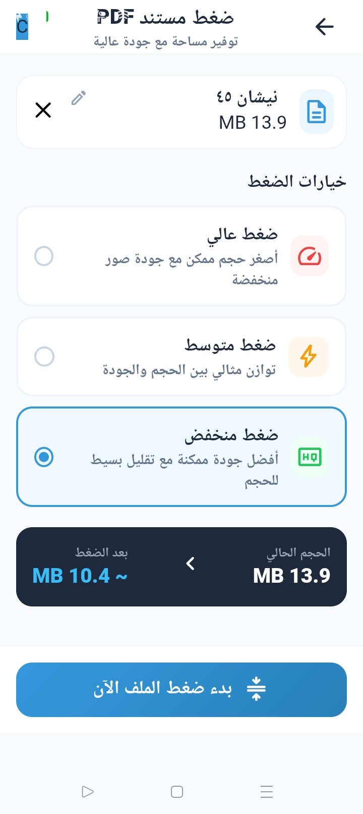
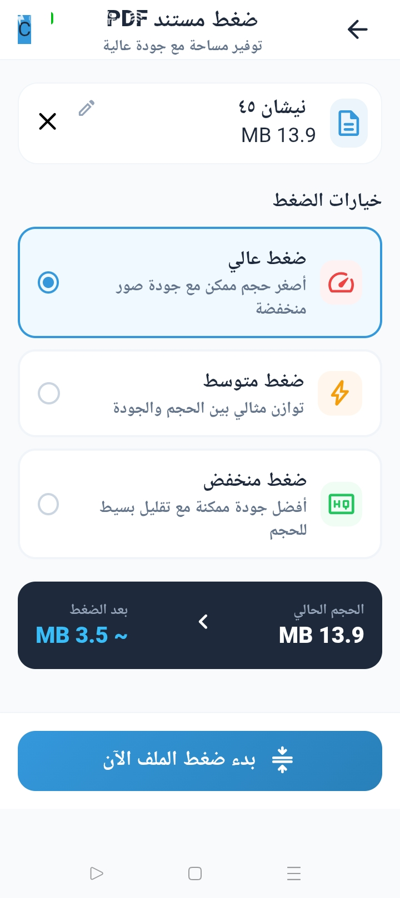

ما الذي يؤثر على حجم PDF؟
يعتمد حجم الملف على عدد الصفحات، والصور المضمنة ودقتها، وطريقة حفظ المحتوى. تستخدم ميزة ضغط PDF في التطبيق مكتبة PDFBox-Android لمعالجة الملفات. تختلف النتيجة بحسب المستند وإعدادات الضغط، لذا لا توجد نسبة تقليل مضمونة لكل الملفات.
اختر مستوى الضغط المناسب
ضغط منخفض
اختر هذا المستوى عندما تكون المحافظة على التفاصيل أولوية وتقبل تقليلًا أقل في حجم الملف.
ضغط متوازن
يوفر حلًا وسطًا للاستخدام اليومي عندما تريد موازنة حجم الملف مع جودة الصور والنصوص.
ضغط عالٍ
قد يساعد على تقليل الحجم بدرجة أكبر، لكن راجع الصور والنصوص الصغيرة بعناية قبل مشاركة الملف.
أمثلة تقديرية من التطبيق
تعرض لقطات الشاشة أدناه تقديرات التطبيق لملف واحد حجمه 13.9 MB: نحو 10.4 MB عند الضغط المنخفض ونحو 3.5 MB عند الضغط العالي. هذه أمثلة توضيحية وليست نتائج مضمونة لملفات أخرى.


ضغط الملف ومراجعة النسخة الجديدة
- اختر ملف PDF في أداة الضغط داخل تطبيق أندرويد.
- حدد مستوى الضغط الذي يناسب حاجتك إلى الحجم والجودة.
- قارن الحجم الناتج بالأصل، وافتح صفحات فيها صور أو نص صغير للتحقق من وضوحها.
احتفظ بالنسخة الأصلية حتى تتأكد من جودة الملف المضغوط. قد تؤثر معالجة الصور في وضوح التفاصيل أو في قابلية تحديد النص والبحث عنه.